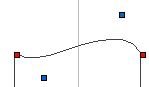

I don't know if this having any interest but here we go.
I have looked at the .bez files for the shapes in FS, and have figured out how they work.
you can open and edit the files by opening them with notepad. The existing bez files is located in “…../Frestyler/Chasers” folder. remember to put yours files in that folder, otherwise FS cant find them
(The bez files only contain the numbers, everything after the “\\” for each line is my comments)
64 // Pan : Position 0 [yellow] 190 // Tilt 64 // Pan : Direction vector for position 0 [Blue] 150 // Tilt 64 // Pan : Direction vector for position 1 [Blue] 104 // Tilt 64 // Pan : Position 1 [Red] 64 // Tilt 104 // Pan : Direction vector for position 1 [Blue] 64 // Tilt 150 // Pan : Direction vector for position 2 [Blue] 64 // Tilt 190 // Pan : Position 2 [Red] 64 // Tilt 190 // Pan : Direction vector for position 2 [Blue] 104 // Tilt 190 // Pan : Direction vector for position 3 [Blue] 150 // Tilt 190 // Pan : Position 3 [Red] 190 // Tilt 150 // Pan : Direction vector for position 3 [Blue] 190 // Tilt 104 // Pan : Direction vector for position 0 [Blue] 190 // Tilt
the Yellow rectangle in the shape window is the initial point for the shape The blue rectangles works like a direction vector for the preceding red rectangle, which is positions 
the syntax in the bez file is
[space][number][space] // line 1 [space][number][space] // line 2 . . [space][number][space] // line 24 [space]
I have tried making a bez file without the spaces and it worked in FS, but just in case I would recommend you use the mentioned syntax
I have used it to make straight vertical and horizontal movements for my scanners. Sometimes it is easier to edit the bez files instead of doing it in the shape window.
{kind=link}